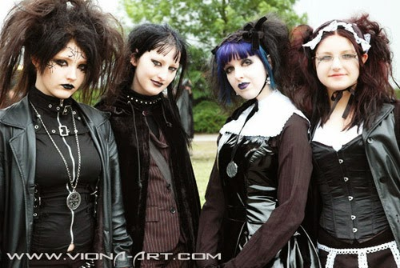

Розвиток готичної субкультури був тісно пов'язаний з еволюцією музичного жанру готичний рок. Свого розквіту він набув у першій половині 1980-х років, коли широко популярними стали такі виконавці, як Bauhaus, Southern Death Cult, Siouxsie and the Banshees та інші. Істотний вплив на формування готики здійснив лондонський клуб Batcave. До 1983 року вже можна було говорити про те, що нова субкультура остаточно утвердилася. У другій половині 1980-х і протягом 1990-х років готична субкультура отримала значну відомість, що призвело до її розділення на декілька незалежних течій. Попри це, вона продовжила розвиватися і в наші дні являє собою неоднорідну, розгалужену систему окремих напрямів. На сьогодні готична субкультура поширена переважно в Європі і Північній Америці, меншою мірою — в Азії і Австралії. Вона має розвинену соціальну та інформаційну інфраструктуру — видаються тематичні журнали, підтримуються сайти, регулярно проводяться готичні музичні фестивалі. Основними складовими субкультури є готична мода і готична музика. Готична мода дуже різноманітна і включає низку специфічних напрямків, проте загальними рисами для більшості з них є переважання чорного кольору в одязі, специфічна атрибутика і особливий макіяж. До готичної музики зазвичай належать готичний рок, дет-рок і дарквейв, хоча це поняття може також включати деякі похідні жанри, наприклад, готичний метал. На розвиток готики мали вплив певні літературні твори і кінострічки, а пізніше вже елементи субкультурної естетики почали проникати в масове мистецтво. Особливо тісно готична культура пов'язана з вампірською тематикою. Однією з психологічних основ готичного руху був «пасивний», естетичний протест проти панівних культурних стереотипів. Для більшості представників субкультури характерні деякі спільні риси характеру (наприклад, замкнутість), проте ніякого єдиного світогляду готи не мають . Попри те, що готи в цілому негативно ставляться до сучасного суспільства, вони здатні успішно у нього інтегруватися . Всередині субкультури склалися свої норми і стандарти, сформувалося певне ставлення до релігійності, особливе розуміння жіночності і мужності, специфічні погляди на міжособистісні стосунки. Готична субкультура постійно наражається на критику з різних позицій. У засобах масової інформації найчастіше тиражується спотворений, негативний образ готики; з боку консервативних кіл суспільства і релігійних організацій на адресу субкультури лунають різноманітні звинувачення, які частіше не відповідають дійсності. У багатьох країнах, в тому числі в тих, що вважаються розвиненими, готи регулярно стикаються з ворожістю з боку оточуючих, а часом навіть стають жертвами агресії.
Зародження готичної субкультури відносять до кінця 1970-х років, коли вплив панку в Британії почав слабшати, і низка гуртів (Joy Division, The Damned, The Clash та інші) звернулися до нового жанру, який отримав назву «пост-панк». Поступово виділився ряд колективів, об'єднаних спільними стилістичними особливостями, пізніше вони сформували «першу хвилю» готичного року — Bauhaus, Virgin Prunes, Southern Death Cult, Sex Gang Children, Specimen, Ausgang. Єдиної думки щодо того, який гурт був першим «дійсно готичним», немає — першопрохідцями жанру називають багатьох виконавців, наприклад, Killing Joke або Gloria Mundi, тим не менш, прийнято вважати, що першість у винайденні нового жанру належить гурту Bauhaus. Серед перших готичних записів музикознавці виділяють сингл «Bela Lugosi's Dead» Bauhaus (1979), альбоми Join Hands (1979) і Juju (1981)Siouxsie and the Banshees. До 1981 року вже можна було говорити про те, що навколо цих груп сформувався новий молодіжний рух — його основу складали шанувальники творчості музикантів, які перейняли в них окремі елементи іміджу. Імовірно, найважливішим для готичної субкультури можна вважати 1982 рік, який ознаменував відкриття знаменитого клубу Batcave — деякі соціологи вважають, що саме ця подія визначила дату виникнення субкультури. Того ж року вийшов альбом Pornography гурту The Cure, який сучасні дослідники вважають однією з вершин ранньої готичної музики. Готика довгий час сприймалась як частина панк-руху. Назви субкультури готів (англ. Goths, англ. Goth subculture) і музичного жанру готичний рок (англ. Gothic Rock або англ. Goth Rock) з'явилися в англійській мові тільки на початку 1980-х (хоча Меллорі О'Доннелл стверджує, ніби слово Gothic використовувалося в пресі ще в 1967 році). Достеменно їхнє авторство невідоме, однак цілком можливо, що ці дефініції ввели в ужиток журналісти видань Melody Maker і NME, причому спочатку вони вживалися в іронічному значенні — словом «готичний» (в англійській мові gothic означає також варварський, грубий, жорстокий) рецензенти прагнули підкреслити похмурість і композиційну простоту мелодій, створених представниками нового жанру. Однією з перших груп, що отримала ярлик «готичної», стала Joy Division — так схарактеризували стиль колективу критики Мартін Ханнетт і Тоні Вілсон. За іншою версією, назва зобов'язана існуванням Ієну Естбері, вокалісту групи Southern Death Cult, який дав своєму приятелеві Енді МакЕлліоту з Sex Gang Children прізвисько «Граф Візігот» і «Готичний гоблін», а його фанатів прозвав «готами». Можливо, Естбері не стільки «винайшов» цей термін, скільки сприяв його поширенню. У жовтні 1983 року журналіст Том Вег описав «орди готів» в журналі Zig Zag; з цього моменту назва субкультури надійно закріпилася.
Друга половина 1980-х років позначилася виникненням «другої хвилі» готичного року (до виконавців цього періоду належать Sisters of Mercy, The Mission, Fields of the Nephilim, All About Eve[en] та інші гурти) і поступовим відходом представників «першої хвилі» у тінь — одні колективи (наприклад, Bauhaus) розпалися, інші (The Cult, Flesh for Lulu) змінили жанр. Саме в цей період (з середини 1980-х до початку 1990-х) готика стала популярною і почала активно висвітлюватись виданнями мейнстриму. З початком 1990-х років готична субкультура утвердилася як «сцена», — про неї вийшли перші книги, були записані перші музичні компіляції, — і в той же час вона зазнала значного спотворення, зіткнувшись з припливом нових учасників, які не мали уявлення про її суть й історію. Прагнення зберегти дух руху призвело до відходу готів в андеграунд. Багато хто з них (у тому числі відомі музиканти) навіть відмовлялися називати себе готами, вважаючи, що цей термін виявився занадто сильно скомпрометованим; подібна тенденція зберігається до-сьогодні. Популярність ряду колективів, особливо Sisters of Mercy, призвела до того, що готична музика стала менш оригінальною — багато новоутворених гуртів просто запозичили елементи стилю у вже популярних виконавців, внаслідок чого їх творчість починала видаватися банальною імітацією. Відповідно до заяви журналістів New Musical Express, готика припинила існування у 1991/1992 році — хоча насправді вона скоріше пішла у тінь і замкнулася в собі. Гурти, що виникали в цей період, охоче приймали визначення «готичних» на відміну від своїх попередників; вони спромоглись, попри деяку вторинність звучання, сформувати власну розвинену сцену, яку популярні видання майже не висвітлювали. 1995 рік можна вважати переломним моментом — в цей час готика зовсім перестала шокувати і дивувати, вона фактично інтегрувалася у західне суспільство і стала його більш-менш звичною частиною. Протягом 1990-х і 2000-х років субкультура зазнала розщеплення — від руху відкололися кілька регіональних напрямів, часто протилежно орієнтованих, відбулося взаємопроникнення музичних жанрів; в результаті на сьогодні уявлення про «готів» можуть дуже сильно варіюватися. Це закономірно породжує суперечки і призводить до непорозумінь — так, наприклад, в США (через некомпетентність журналістів) під «готичними» найчастіше розуміють одразу всі напрямки, які не належать до мейнстриму, а німецька «Шварц-сцена», яка зазвичай асоціюється з субкультурою, насправді об'єднує величезну кількість різноманітних музичних жанрів — від електронної танцювальної музики до блек-металу.
Серед сучасних представників субкультури можна умовно виділити два великих напрямки — до першого належать готи, які віддають перевагу музиці «традиційних» жанрів (готичний рок, пост-панк, дарквейв), до другого — шанувальники EBM, дарк-електро і подібних стилів, що мають з початковою готикою мало спільного; відмінність в смаках призвела до того, що у представників цих двох течій виникли різні модні тенденції, часто вони відвідують різні клуби і фестивалі, користуються вузько орієнтованими Інтернет-ресурсами — відповідно, і розуміння «готики» у них може бути майже протилежним. Посилилося і розмежування між представниками різних вікових груп всередині готичної спільноти, часто вони насилу знаходять спільну мову. Для сучасних готів постійні суперечки, дискусії і роздуми про те, що ж «насправді» є «справжня готика», становлять невіддільну частину їхнього життя всередині субкультури. Крім «справжніх» готів, існують і «позери», кількість яких почала збільшуватися в 1990-х — найчастіше це підлітки, які намагаються виглядати як представники субкультури, але не розбираються в її історії, музиці й моді; для їх позначення нерідко використовуються різні зневажливі прізвиська.Попри те, що багато гуртів, завдяки яким сформувалася субкультура, зійшли зі сцени, багато представників, які прийшли до неї в 1980-х, продовжують вважати себе готами; в той же час вона постійно поповнюється молоддю. Чимало дизайнерів одягу, ювелірів і виробників біжутерії орієнтують свою продукцію суто на готів (серед них відомі, наприклад, компанія Alchemy Gothic, що випускає різного роду прикраси з 1977 року, марки одягу X-TRA-X і Kambriel, фірма Urban Decay, що спеціалізується на виробництві готичної косметики). Випускаються кілька журналів (наприклад, британські Dominion Magazine і UnScene Magazine) і безліч фензинів (серед найвідоміших — Meltdown, що виходив до 2004 року, і Kaleidoscope), присвячених суто готичній музиці, пов'язаним з нею подіям і субкультурі в цілому. Німецькі видання Sonic Seducer, Zillo і Orkus не є повною мірою «готичними», оскільки приділяють увагу безлічі жанрів музики, проте готи, безумовно — їх основна аудиторія. Серед готичної преси на романських мовах можна виділити журнал Elegy, що має дві версії — французьку і подвійну іспано-португальську. 2006 року побачило світ перше друковане готичне видання в Україні — журнал Gothica Українського готичного порталу. Центрами, навколо яких формуються локальні готичні співтовариства в Західній Європі і США, часто стають «дружні субкультурі» клуби. Сформувався навіть особливий танцювальний стиль, характерний для готів — зазвичай вони танцюють поодинці, здійснюючи хвилеподібні рухи всім тілом або навіть просто ходять по танцполу під музику. Деякі дослідники описують це явище як «траурні» або навіть «анти-танці». Деякі клуби перетворюються на свого роду закриті співтовариства зі своїми суворимим правилами, нормами поведінки і ритуалами. Важливу роль в сучасній готичній субкультурі відіграє Інтернет. У Європі та США існує розгалужена система готичних сайтів і форумів, яка частково замінює «живе» спілкування і допомагає встановлювати численні контакти. У той же час Інтернет сприяє розмежуванню представників спільноти, оскільки поріг входження новачків на зарубіжних готичних сайтах дуже високий, а при найменшому натяку на некомпетентність вони ізолюються; це призводить до швидкого відсіювання «позерів» і випадкових відвідувачів. Багато смакових стандартів і субкультурних норми нині формуються саме на тематичних ресурсах. Серед так званих «Інтернет-готів», як і у всіх інших, існує поділ на «повноцінних» учасників і «позерів», сформувався свій особливий сленг.